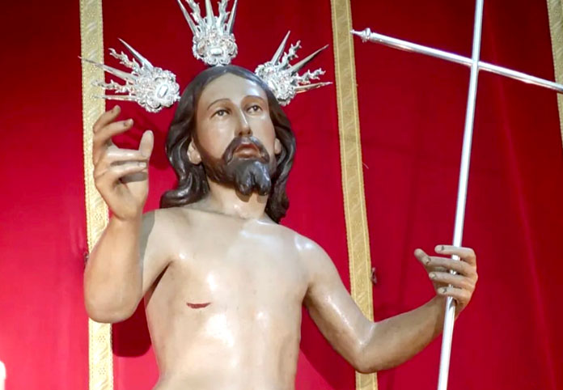

Resucitado
Parroquia Santa María Magdalena

Datos de interés
El 20 de Enero de 2023, la Hermandad del Santo Entiero, aprobó la reforma de las reglas, así amplia el culto al Señor Resucitado, a través de procesión del día de Pascuas de Resurreción.
Autores
Santisimo Cristo Resucitado de La Cruz es obra de autor anónimo (finales del siglo XVIII y principios del XIX) y restaurada en 1990.
Música
Banda de Música Santa Ana de Dos Hermanas.
RECORRIDO
| Hora Aprox. | Cruz de guía |
|---|---|
| 12:00 | Salida |
| -- | Plaza de la Constitución |
| -- | La Mina |
| -- | Purísima Concepción |
| -- | Real Utrera (Capilla del Gran Poder) |
| -- | Pereda |
| -- | San Sebastián |
| -- | Plaza del Emigrante |
| -- | Canónigo |
| -- | Antonia Díaz |
| -- | Doctor Caro Romero |
| -- | Santa María Magdalena |
| -- | Plaza de la Constitución |
| -- | Carrera Oficial |
| -- | Parroquia de Santa María Magdalena |
| 13:45 | Entrada |